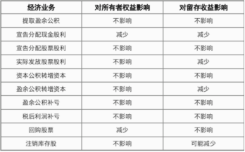

短期借款，本金1200000元，期限9个月，年利率4%。根据与银行签署的借款协议，到期还本，利息按月计提利息、按季支付，则3月末计入“应付利息”科目的金额为
每月应计提的利息金额=1200000×4%÷12=4000(元)，1月和2月需要计提利息，最后3月末，不用计提利息，直接计入当期的财务费用。会计分录如下：
借：应付利息 8000（1月、2月）
财务费用 4000（3月当月）
贷：银行存款 12000
企业借款利息不采用预提方式，利息在到期还本付息时直接确认当期损益，借记“财务费用”科目，贷记“银行存款”科目。就是说不涉及应付利息。
2021年9月1日，某企业向银行借入一笔期限2个月，到期一次还本付息的生产经营周转借款200000元，年利率6%。借款利息不采用预提方式，于实际支付时确认。
每月应计提的利息金额=200000×6%÷12=1000（元，11月1日偿还借款本息，共计提2个月的利息，财务费用=1000+1000=2000（元）。
11月1日，会计分录如下：
借：短期借款 200000
财务费用 2000
贷：银行存款 202000
2021年1月1日，某企业向银行借入资金600000元，期限为6个月，年利率为5%，借款利息分月计提，按季支付，本金到期一次归还，下列各项中，
借款利息分月计提，按季支付；2021年6月30日支付利息时：
借：应付利息 5000（600000×5%÷12×2）
财务费用 2500（600000×5%÷12）
贷：银行存款 7500
这里是分月计提，按季支付，三月已经把前三个月的利息偿还了，前三个月的账务处理结束了，六月是确认并计量四月到六月的借款利息的交付。
企业不单独设置“预收账款”科目，应将预收的款项直接记入“应收账款”科目的贷方。因为预收是负债，应收是资产，负债增加等于资产减少，所以为应收账款的贷方。
其他应付款的核算内容主要有下列几项：
（1）应付短期租赁固定资产的租金；
（2）应付低价值资产租赁的租金；
（3）租入包装物的租金；
（4）出租或出借包装物向客户收取的押金；
（5）存入保证金等。
应付利息是短的，比如短期借款利息，计提的分期付息到期还本债券利息。计提的一次还本付息债券利息应通过“应付债券――应计利息”科目核算。
企业到期无力支付的银行承兑汇票，应按账面金额转入“短期借款”。
计提 带息应付票据 利息的分录：
借：财务费用
贷：应付票据
计提 短期借款 利息的分录：
借：财务费用
贷：应付利息
就是说应付票据自己可以增加。
企业为高管人员配备汽车作为福利。计提这些汽车折旧时，应编制两笔会计分录：
借：管理费用
贷：应付职工薪酬
借：应付职工薪酬
贷：累计折旧
企业将拥有的房屋等资产无偿提供给职工使用的，应当根据受益对象，将该住房每期应计提的折旧计入相关资产成本或当期损益，同时确认应付职工薪酬。
基本账务处理如下：
借：生产成本/制造费用/管理费用/销售费用/在建工程/研发支出等
贷：应付职工薪酬――非货币性福利
同时：
借：应付职工薪酬――非货币性福利
贷：累计折旧
可以看出应付职工薪酬在中间。
车间管理人员工资计入制造费用。
辞退后福利不再适用“谁受益谁承担”的原则，无论是哪个部门，借方均应通过“管理费用”科目核算。
企业以其自产产品作为非货币性福利发放给职工的，应当根据受益对象，按照该产品的含税公允价值，计入相关资产成本或当期损益，同时确认应付职工薪酬。
基本账务处理如下：
1.计提职工薪酬
借：生产成本/制造费用/管理费用/销售费用/在建工程/研发支出等（含销项税的售价）
贷：应付职工薪酬――非货币性福利（含销项税的售价）
2.实际发放
（1）确认收入
借：应付职工薪酬――非货币性福利（含销项税的售价）
贷：主营业务收入
应交税费――应交增值税（销项税额）
（2）结转成本
借：主营业务成本
贷：库存商品
上面可以看出，就是把费用变为了收入。
企业应当将离职后福利计划分类为设定提存计划和设定受益计划。设定受益计划是指除设定提存计划以外的离职后福利计划；设定提存计划是指向独立的基金缴存固定费用后企业不再承担进一步支付义务的离职后福利计划。
辞退福利不区分受益对象，直接计入当期损益，通过“管理费用”科目核算。
1.职工带薪缺勤分为累积带薪缺勤和非累积带薪缺勤两类。如果带薪缺勤属于长期带薪缺勤的，企业应当作为其他长期职工福利处理。
2.短期带薪缺勤，是指职工虽然缺勤但企业仍向其支付报酬的安排，包括年休假、病假、婚假、产假、丧假、探亲假等。其中婚假、产假、丧假、探亲假、病假期间的工资通常属于非累积带薪缺勤。
回购股票支付的价款低于股票面值总额，相关会计分录如下：
回购时：
借：库存股
贷：银行存款
注销时：
借：股本
贷：库存股
资本公积――股本溢价
库存股也是垃圾堆，库存股的大小是回购时实际支付的价款。
可以看出回购股票
股份有限公司接受现金资产投资时的账务处理：
借：银行存款（实际收到的投资额）
贷：股本（股票面值总额）
资本公积――股本溢价（实际收到的投资额超过面值的部分）
股份有限公司发行股票发生的手续费、佣金等交易费用和回购股票支付的价款超过面值总额的部分均应按顺序依次冲减资本公积――股本溢价、盈余公积、未分配利润。
以盈余公积发放现金股利
分配股利计提:
借:盈余公积-法定盈余公积或任意盈余公积
贷:应付股利
盈余公积才分配股利，多的才给你。
我们知道企业的经营的目的就是为了盈利，即股东为了盈利。所以企业经营有利润时会分配给相关股东，令股东获得收益。但市场行情瞬息万变，企业总得将一些经营所得利润保留下来，以备不时之需。这个将部分收益保留下来的过程就是“盈余公积”。
库存股不是资产，是所有者权益类科目。
可以看出补亏都是一增一减，所以对所有者权益没有影响。
回购股票，借库存股，贷银行存款，所以所有者权益减少。

（1）股份有限公司以外的企业接受现金资产投资时：
借：银行存款（实际收到的投资额）
贷：实收资本（投资合同或协议约定的投资者在企业注册资本中所占份额的部分）
资本公积――资本溢价（实际收到的金额超过投资者在企业注册资本中所占份额的部分）
（2）股份有限公司接受现金资产投资时：
借：银行存款（实际收到的投资额）
贷：股本（股票面值总额）
资本公积――股本溢价（实际收到的投资额超过面值的部分）
接受非现金资产投资的账务处理：
借：库存商品/原材料/固定资产/无形资产等（合同或协议约定的价值，不公允的除外）
应交税费――应交增值税(进项税额)
贷：实收资本(或股本)（合同或协议约定投资者在注册资本中享有的份额）
资本公积――资本(股本)溢价（差额）
接受非现金资产投资，接受方应按合同约定金额（不公允的除外）与增值税进项税额作为实收资本。
某股份有限公司首次公开发行普通股500万股。每股面值1元，发行价格6元，相关手续费和佣金共计95万元（不考虑增值税）。
发行股票的溢价计入资本公积且其发行股票相关的手续费应从溢价中抵扣。所以应计入资本公积的金额=500×6-500-95=2 405（万元）。
“其他权益工具”科目核算企业发行的除普通股以外的归类为权益工具的各种金融工具。